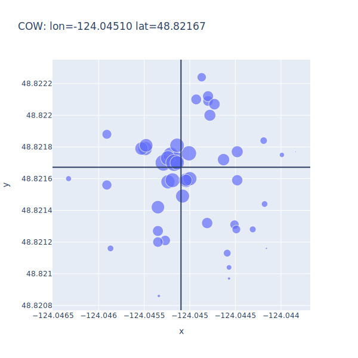

Do they have the same number of values for each key?
def check(tables):
"""Check all tables against each other."""
ref_key = None
for key in tables:
if ref_key is None:
ref_key = key
continue
if set(tables[ref_key].keys()) != set(tables[key].keys()):
print(f"mis-match in provided tables {ref_key} != {key}")
else:
for sub_key in tables[ref_key]:
if len(tables[ref_key][sub_key]) != len(tables[key][sub_key]):
print(f"mis-match in {sub_key}: {ref_key} != {key}")
Display

Figure 2: Geographical map of sample distributions around COW site.
Handling CSV
Plugin to handle CSV is the simplest
Read all the files in the directory using Pandas
def read_data(csvdir):
"""Read CSV files directly into dataframes."""
raw = [pd.read_csv(filename) for filename in Path(csvdir).glob("*.csv")]
return util.combine_with_pandas(*raw)
# Query to select all samples from database in normalized form.
Q_SAMPLES = """
select
surveys.site,
samples.lon,
samples.lat,
samples.reading
from surveys join samples
on surveys.label = samples.label
"""
Handling Databases
The code
def read_data(dbfile):
"""Read tables and do calculations directly in SQL."""
con = sqlite3.connect(dbfile)
return {
"combined": pd.read_sql(util.Q_SAMPLES, con),
"centers": pd.read_sql(Q_CENTERS, con),
}
Finding Centers
The query is more complex, but the code to run it is the same
Q_CENTERS = """
select
surveys.site,
sum(samples.lon * samples.reading) / sum(samples.reading) as lon,
sum(samples.lat * samples.reading) / sum(samples.reading) as lat
from surveys join samples
on surveys.label = samples.label
group by surveys.site
"""